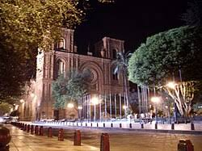

Historia y arquitectura
El patrimonio de Cuenca invita a conocer sus edificios, plazas y espacios culturales. En esta sección encontrarás algunos lugares para acercarte a la historia y la arquitectura de la ciudad.

Lugares para conocer
- Catedral de la Inmaculada Concepción
- Catedral Vieja
- Parque Calderón
- Museo Pumapungo